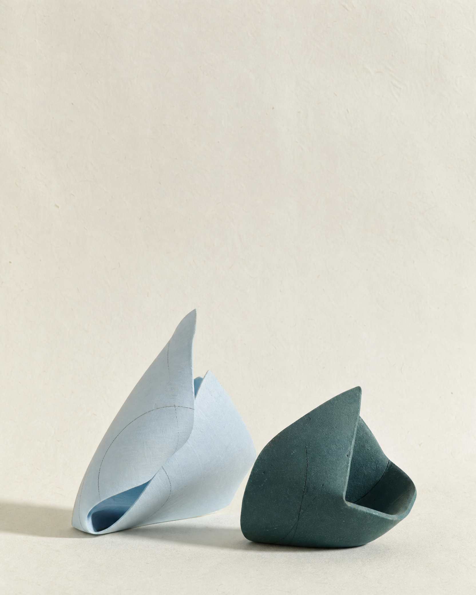
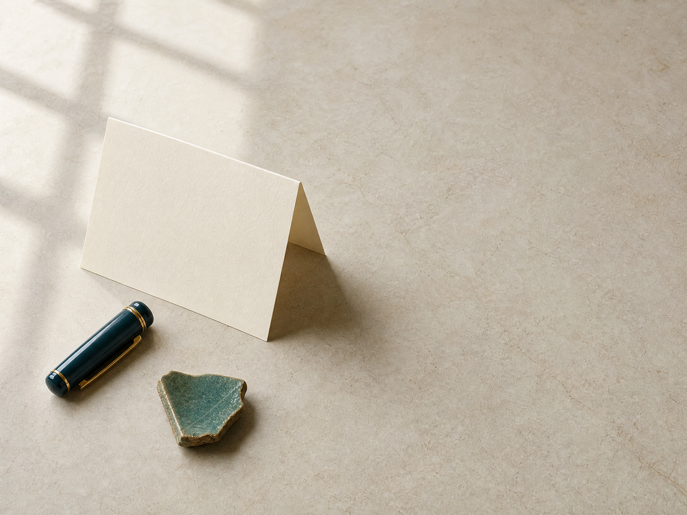

FIGURES — NEW ISSUE
▱最新号の情報を
掲載準備中
最新号の情報を
ここに掲載します。
表紙、号名、発刊日、頒価、紹介文、目次を登録すると、最新号として自動表示されます。
Issue number—Publication date—

FORM / SILENCE / TRACE
最新号
掲載準備中
表紙、号名、発刊日、頒価、紹介文、目次を登録すると、最新号として自動表示されます。
バックナンバー
刊行情報を登録後に表示
刊行情報を登録後に表示
刊行情報を登録後に表示
刊行情報を登録後に表示
一冊ごとに表紙、発刊情報、目次、購入案内を追加できます。初期公開時は、登録済みの号だけがこの棚に並びます。
お知らせ
お知らせは
まだありません。
Figuresとは
Figuresは、作品と批評を丁寧に読み、言葉の新しい輪郭を見つめるための文芸誌です。このページには、創刊の趣旨、編集方針、発行情報を掲載します。
「Figuresとは」は管理画面の固定ページから、いつでも書き換えられます。
お問い合わせ
冊子の購入、会員・寄稿について、掲載内容に関するお問い合わせは、専用フォームで受け付けます。
公開時に受信先メールアドレスと個人情報取扱いを設定します。

CONTACT / 04